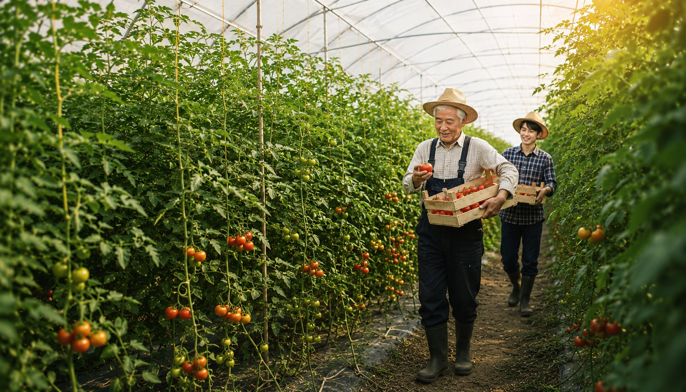
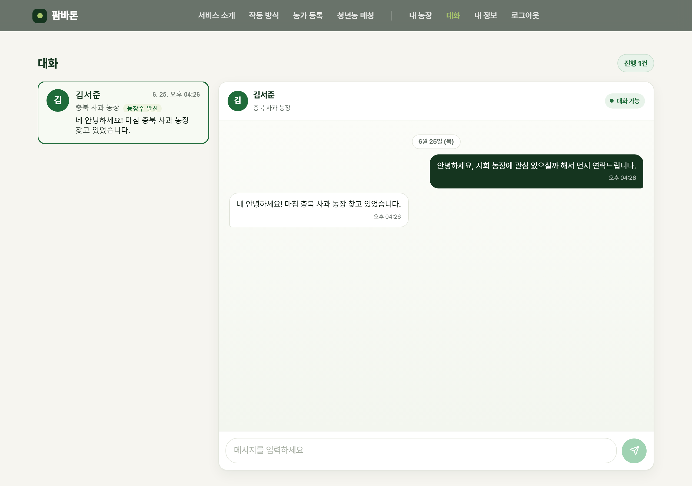

팜바톤 · FarmBaton
떠나는 농장과
시작하는 청년을 잇다
고령 농가의 농장(농지·작목·시설·판로)을 청년농에게 잇는
농장 승계 진단·매칭 플랫폼
▶ https://farmbaton.vercel.app
문제 인식
농장은 멈추는데, 이어받을 통로가 없습니다
55.8%
65세 이상 농가인구 비율
(처음 55% 돌파, 역대 최고)
50.8%
70세 이상 경영주 비중
(과반·49.5만 가구)
4,601가구
40세 미만 청년 경영주
(2020년 12,426 → 역대 최저)
출처: 통계청 「2024년 농림어업조사」
수십만 농가가 은퇴를 앞두고 있지만 후계자가 없고, 들어오려는 청년농과 연결할 통로가 없습니다.
농장의 가치를 객관적으로 평가하기도 어려워(감정평가는 비용·시간 부담), 정보 비대칭으로 영농 기반이 그대로 사라집니다.
솔루션
공공데이터로 가치를 산정하고, AI로 설명하고, 점수로 잇습니다
기능 ① 농장주
농가 등록 → 인수 검토 리포트
주소만 입력하면 팜맵으로 필지 면적을 자동 취득하고, 공공데이터를 결합해 가치를 추정합니다.
- 예상 연소득 · 토지 기준가 · 시설 잔존가 산출
- 인수 검토가 범위(참고용 추정) + 신뢰등급(A~D)
- 생성형 AI가 농장주/청년농 관점별 PDF 리포트 생성
기능 ② 청년농
프로필 → 매칭 리스트
희망 지역·작목·자본·경력을 입력하면 승계 가능 농장을 점수순으로 추천받습니다.
- 지역·작목·자본·경험·승계·정책 6요인 매칭(100점)
- 맞춤 지원사업·시설 현황 확인
- 인앱 상담 신청 → 농장주 수락 시 양방향 채팅
작동 화면
주소 입력부터 매칭·대화까지, 한 흐름으로
팜맵 필지 면적 자동 취득(좌), 4분할 가치 그리드와 신뢰등급(중), 6요인 점수와 설명이 담긴 매칭 카드(우).
모든 단계가 실제 운영 중인 production에서 동작합니다.
04 매칭 후 인앱 채팅 — 농장주 ↔ 청년농 승계 논의

기술 · 공공데이터 · AI
재현 가능한 계산 + 책임 있는 AI
공공데이터 ETL
팜맵 SHP · 소득조사 · 공시지가 · 실거래가
V-World 국내 우회 프록시
국외반출 제한 대응 (Tailscale Funnel)
생성형 AI
Claude API · 리포트 서술
| 구분 | 공공데이터 (제공기관) | 활용 |
|---|
| 실시간 API | V-World 지오코딩 (국토부) | 주소 → 좌표 변환 |
| 적재(공간) | 팜맵 (V-World 취득 · 원천 농정원/EPIS) | 필지 면적·위치 자동 취득 |
| 적재 | 농산물 소득조사 (농촌진흥청) | 예상 연소득 기준계수 |
| 적재 | KAMIS 가격·평년가 (aT) | 시세 보정·참고 |
| 적재 | 개별공시지가 (V-World) · 토지 실거래가 (국토부) | 토지 기준가 산정·보정 |
🤖 “숫자는 알고리즘, 설명은 AI” — 책임 있는 AI 설계
금전 추정치(가치·매칭 점수)는 100% 결정론적 함수로 계산해 재현·검증이 가능하고 환각으로 인한 잘못된 금액 제시를 원천 차단합니다.
생성형 AI는 그 수치를 농장주·청년농 각자의 언어로 번역하는 설명 생성에만 사용 — 고령 농가와 청년농의 정보 격차를 해소합니다.
기대효과
- 사라지던 영농 기반을 다음 세대로 연결(식량안보·지역소멸 대응)
- 승계 검토: 감정평가(비용·수일) → 무료·수십 초
- 공공데이터 기반 객관적 매칭으로 탐색비용 절감
차별성
- 토지+과수 수령+시설+영업권 통합 승계 가치 모델
- 관점별 AI 리포트 + 6요인 매칭 + 정책자금 연계
- 국외반출 제약을 푼 국내 우회 인프라